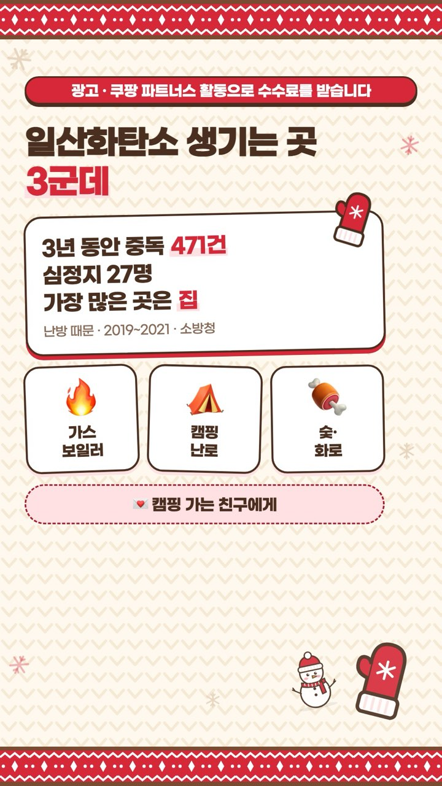

17번 영상
일산화탄소, 캠핑장만 위험할까?
광고 이 게시물은 쿠팡 파트너스 활동의 일환으로, 이에 따른 일정액의 수수료를 제공받습니다.
영상에서 비교한 3가지예요. 누르면 쿠팡 검색 결과로 가요.
영상 속 비교표 바로 보기 ↓일산화탄소 생기는 곳 3군데
3년 동안 중독 471건 심정지 27명 가장 많은 곳은 집
난방 때문 · 2019~2021 · 소방청
경보기는 어디에 필요할까
- 가스보일러
- ✔ 2020.8 뒤 새로 달면 경보기 의무
- ⚠ 배기통 빠짐·막힘 확인
- 중독 1위 장소는 집
- 캠핑 난로
- ✔ 휴대용 경보기 두기(권고)
- ⚠ 닫힌 텐트 안 난방 위험
- 텐트·차박
- 숯·화로
- ✔ 바깥에서만 피워요
- ⚠ 텐트·실내에선 안 돼요
- 고기 굽는 날
출처: 소방청(2022.10.24) · 행정안전부(2025.11) · 도시가스사업법 시행규칙

다 읽으셨나요?
영상에서 비교한 3가지, 여기서 바로 쿠팡에서 볼 수 있어요.